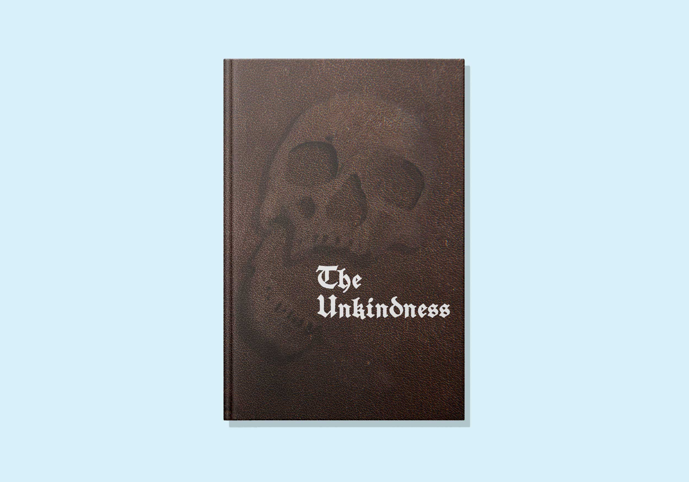
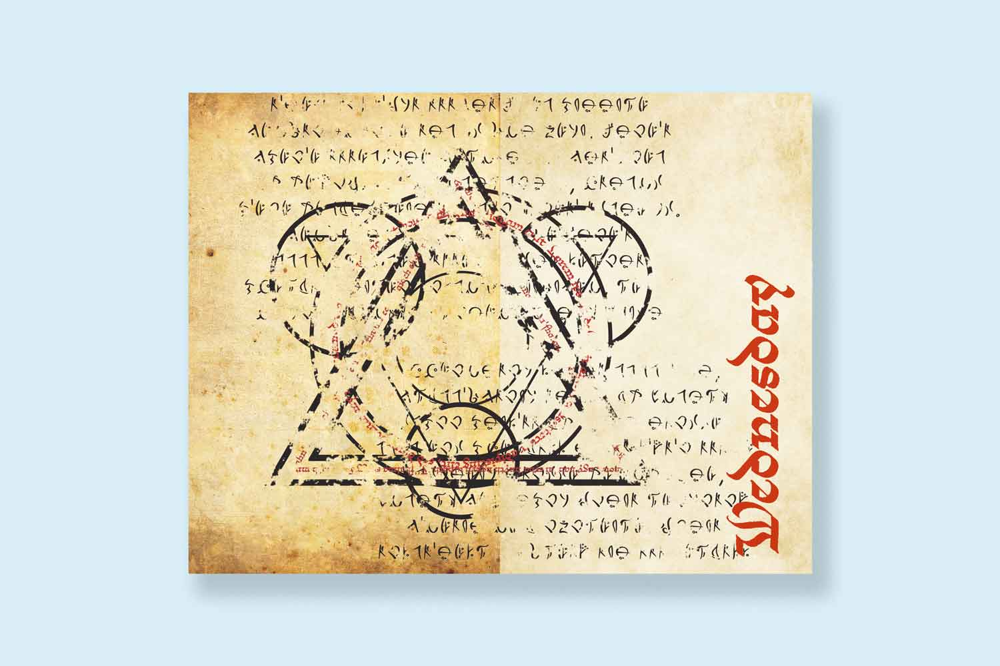
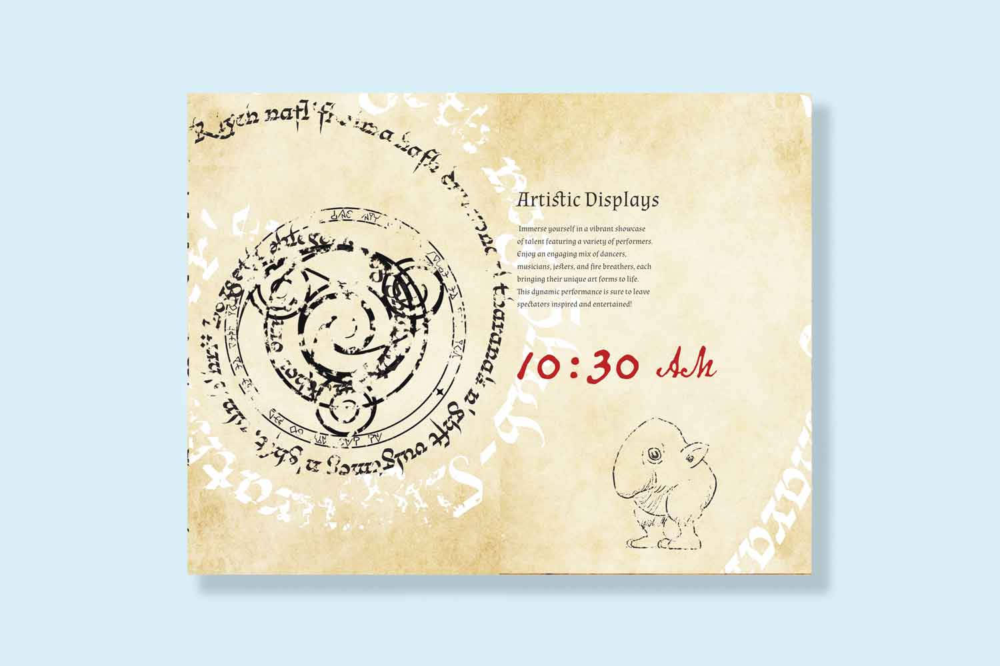
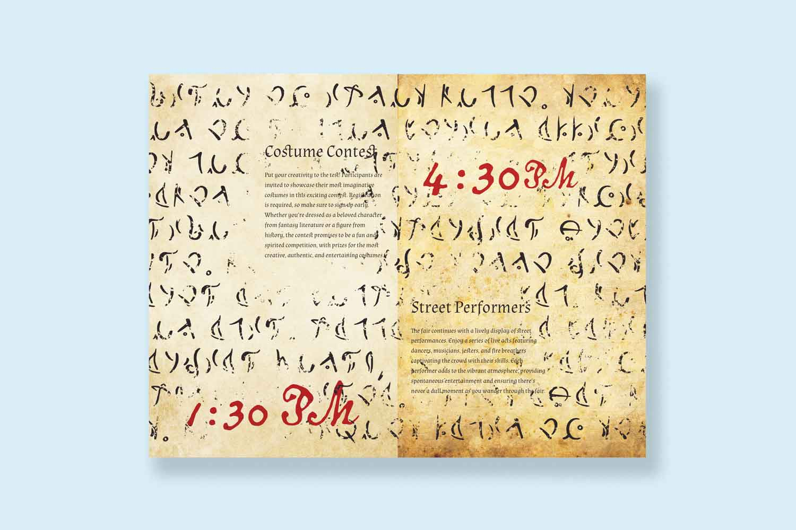
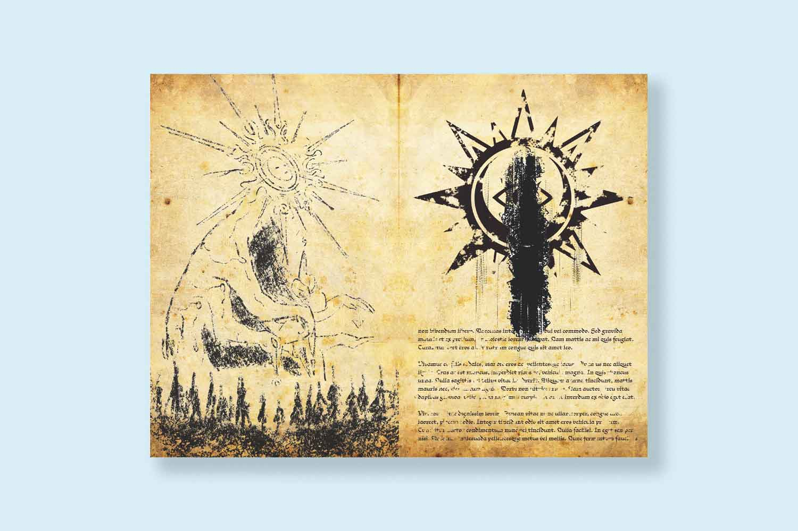
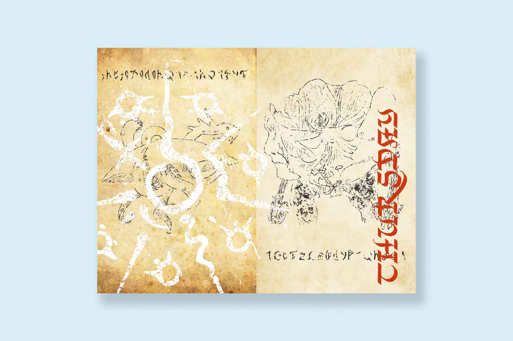

The Unkindness Festival
This project is a purely creative outlet with the goal to present provided texts in a chaotic layout. Most rasters and vectors were modified in illustrator and photoshop to give a grungy and worn look. Inspired by the Necronomicon.





